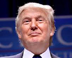

| Profile |
Stances |
Posts |

Bernie Sanders |
"Climate change is the greatest threat facing our planet. We must act boldly. I will cut U.S. carbon pollution by 80% by putting a tax on carbon pollution, repealing fossil fuel subsidies and make massive investments in energy efficiency and clean, sustainable energy such as wind and solar power creating a 100% clean energy system."
|
|

Donald Trump |
Trump says that "people in the 1920s thought the Earth was cooling, now it's global warming," implying that all subsequent climate science is nonsense.
|
|

Marco Rubio |
"Let me just say no matter how you feel about the issue of the environment and climate and changes to climate, there's no way any reasonable person could conclude that the most immediate threat we face to our security is what the climate is going to look like in 25 or 30 years."
|
No tweets on this topic. |
Hillary Clinton |
"Climate change is real no matter what climate deniers say. I've laid out bold national goals to address the threats it poses. As president, I'll say no to drilling in the Arctic. I'll stop the tax giveaways to big oil and gas companies. And I'll make significant investments in clean energy. Our children's health and future depend on it."
|
|